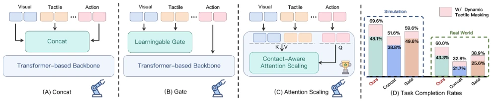
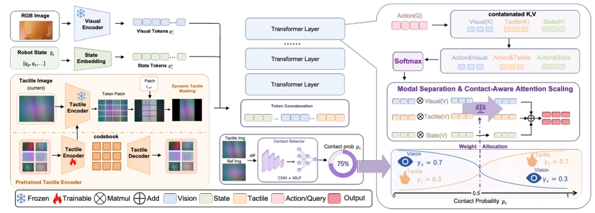
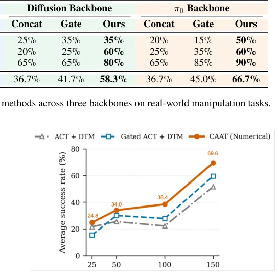
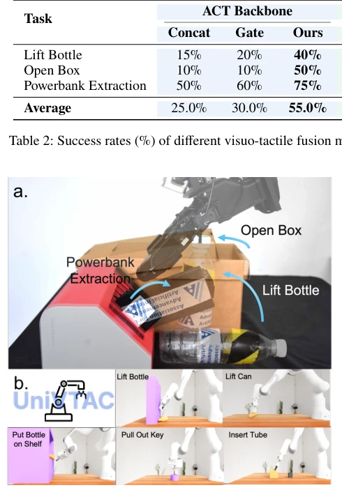
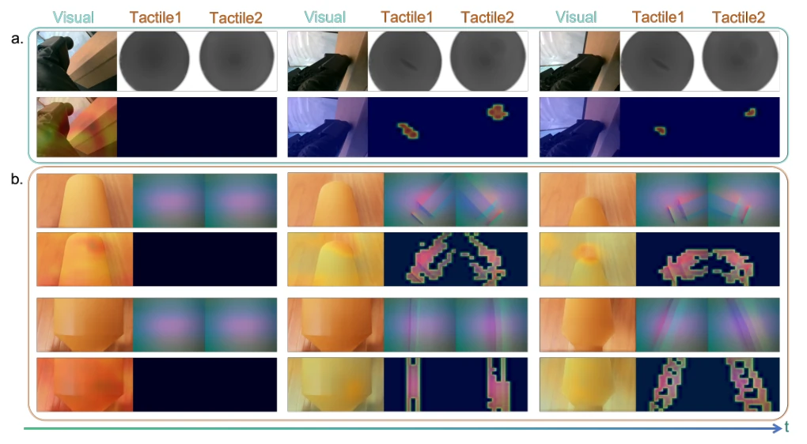
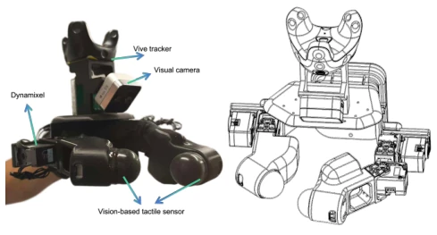

This paper adds a "switch" to tactile strategies, attempting to resolve the "blindness" inherent in Transformer modality fusion. Traditional methods either concatenate directly or learn gating, all relying on the model to infer from data "when to trust tactile". CAAT, however, directly injects priors: trust vision before contact, trust tactile during contact. This approach is indeed effective, boosting success rates by approximately 20% in both simulation and real-world robots. However, to be blunt, this constitutes "trading engineering tricks for data efficiency", reducing the complex modality alignment problem to state switching. If the contact detector misjudges, the entire strategy collapses, representing a "success and failure hinge on the same factor" scenario. Additionally, it has strong hardware dependency; without a high-quality tactile sensor, this approach is mere talk. Nevertheless, for data-scarce scenarios, this is indeed a practical "shortcut", particularly suitable for tasks where collecting large amounts of contact data is difficult.
研究动机Motivation
接触丰富操作中，视觉主导自由空间，触觉主导接触瞬间。但现有 Transformer 策略（如 ACT, Zhao et al. 2023）通常直接拼接或学习门控（Zang et al. 2026），缺乏显式的接触先验。由于接触事件稀疏，模型难以从演示中高效学习何时该信触觉。这导致数据效率低，尤其在少样本下。UniVTAC 基准（Chen et al. 2026）显示，直接融合在接触任务上表现不佳。自适应门控方法（Li et al. 2025a）虽缓解但未根本解决，仍需大量数据。因此，如何显式利用接触阶段先验，成为提升数据效率的关键。现有方法往往假设所有时刻模态同等重要，忽略了物理交互的阶段性特征，导致模型在稀疏信号中迷失。
In contact-rich manipulation, vision dominates free space while tactile dominates contact moments. However, existing Transformer policies (e.g., ACT, Zhao et al. 2023) typically concatenate directly or learn gating (Zang et al. 2026), lacking explicit contact priors. Due to sparse contact events, models struggle to efficiently learn when to trust tactile from demonstrations. This results in low data efficiency, especially under few-shot conditions. The UniVTAC benchmark (Chen et al. 2026) indicates that direct fusion performs poorly on contact tasks. Adaptive gating methods (Li et al. 2025a) alleviate this but do not fundamentally solve it, still requiring substantial data. Therefore, how to explicitly utilize contact phase priors becomes key to improving data efficiency. Existing methods often assume modalities are equally important at all times, ignoring the phased characteristics of physical interaction, causing models to get lost in sparse signals.

Figure 1: Overview of visuo-tactile fusion strategies and their performance comparisons: (A) Direct token concatenation and (B) learnable gating lack explicit priors for switching between contact and non-contact phases. (C) CAAT introduces contact-aware attention scaling to emphasize vision tokens before contact and tactile tokens during contact. (D) With dynamic tactile masking applied to all methods, CAAT consistently outperforms concatenation and gated fusion on both simulation and real-world manipulation tasks.
The overall workflow involves tactile encoding followed by masking, then entering the Transformer, and finally decoding. The core innovations lie in two aspects: first, Dynamic Tactile Masking (DTM), which compares the current tactile map with an initial non-contact reference map; backgrounds with high similarity are directly masked out, retaining only contact deformation regions. Formally, cosine similarity is calculated, and values below a threshold are retained. Second, Contact-Aware Attention Scaling (CAAS), which first uses a lightweight CNN-MLP to judge contact presence; without contact, visual weights are maximized, and with contact, tactile weights are maximized. Formally, visual and tactile attention reads are scaled based on state zt. Finally, they are combined to decode actions. These two modules can be plugged into ACT, DP, or π0 without modifying the decoder. DTM addresses spatial redundancy, while CAAS addresses temporal phase dependency, complementing each other. In specific implementation, the tactile encoder uses a pre-trained ViT to convert images into patch tokens. DTM generates a binary mask by comparing current tokens with reference tokens, suppressing static background. CAAS, after self-attention, weights specific reads of visual, tactile, and proprioception, with weight functions determined by the contact state. This design avoids end-to-end learning of modality allocation, reducing data requirements.

Figure 2: Overview of CAAT. CAAT introduces contact-aware priors into Transformer-based visuo-tactile action prediction. Visual observations and robot states are encoded as modality-specific tokens, while tactile images are converted into patch tokens using a pretrained tactile encoder. CAAT first applies Dynamic Tactile Masking, which compares the current tactile tokens with a non-contact reference and suppresses unchanged background regions while retaining tokens that capture contact-induced deformations. The visual, masked tactile, and state tokens are then concatenated and processed by Transformer layers. For action decoding, CAAT computes modality-specific attention readouts and scales the visual and tactile contributions according to the estimated contact state: visual features are e
Simulation uses UniVTAC (Chen et al. 2026), while real-world experiments use a self-developed dual-finger tactile gripper. Baselines include direct concatenation and learnable gating. CAAT improves average success rate by 18 percentage points in simulation, and by 21.1 percentage points on average in the real world across architectures (ACT, DP, π0). Ablation studies show DTM is beneficial for all fusion strategies, while the scaling mechanism is the core source of CAAT's gain. Data efficiency experiments also prove significant advantages under few-shot conditions. On tasks such as Lift Bottle, CAAT performance is significantly superior to baselines. Real-world experiments verify cross-architecture generalization, proving prior injection is effective. Specifically, ACT on Lift Bottle improved from 20% to 71%, and Open Box from 10% to 50%. This demonstrates that tactile information is effectively utilized in contact-critical tasks.

Figure 4: Data efficiency on the UniVTAC benchmark. The curves report the average success rate across five simulation tasks under different numbers of training demonstrations. All methods use ACT as the policy backbone and apply Dynamic Tactile Masking. CAAT uses the fixed numerical scaling strategy.

Figure 3: Evaluation settings and tasks. (a) Our proposed ap- proach is evaluated on three real-world contact-rich manip- ulation tasks: Lift Bottle, Open Box, and Powerbank Extrac- tion. (b) UniVTAC simulation environments used for evalu- ation.

Figure 5: Attention heatmap visualization. Panel (a) presents one representative real-world rollout, while panel (b) presents two representative simulated rollouts. Each rollout is arranged in two rows: the top row shows the raw observation frames, and the bottom row shows the corresponding attention heatmaps overlaid on the observations. The heatmaps visualize the modality- specific cross-attention weights after contact-aware attention scaling, with brighter regions indicating tokens with larger scaled attention contributions.
其他图片Other Figures

Figure 6: Hardware design of the tactile gripper. The dexter- ous two-finger tactile device is used for both human-operated demonstration collection and robot policy deployment. Each fingertip is equipped with a PPTac tactile sensor, and five Dynamixel motors control the opening/closing and lateral motion of the fingers. During data collection, a Vive Tracker mounted on the gripper records its pose and motion. During deployment, the tracker is removed, and the robot executes the policy based on the end-effector pose.